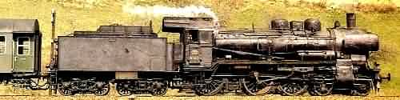

WORTHINGTON'S WORKSHOP
European Railways - Main Page
|
|
Information about the locomotives of Europe: Pictures and specifications for locomotives of
the German, Swiss and Scandinavian railways. There are links to a German railways timeline,
epoch/era definitions, German train formations plus locomotive and rolling stock numbering.
Details are given for railway system names and a biography of Prussian Engineer Robert Garbe.
Dr. Eng. Robert Hermann Garbe
The Early Days Robert Garbe was born the eldest son of Master Fitter Ferdinand Garbe in the Upper Schlesien capital of Oppeln, now in south west Poland. There he went to the local elementary school until forced out by family economic circumstances. After an apprenticeship as a fitter in his fathers locksmith workshop, the desire for further training led to the Breslau Technical School. Whilst there he also worked in the main workshop of the Upper Schlesien railway and took supervisor examinations in the spring of 1867. He was referred to the Provincial Vocational School in Brieg where he gained honours in the final examination. In 1869 he left with a state scholarship for the Royal Prussian Trade Academy in Berlin (later Berlin Charlottenburg Technical University and today's Technical University of Berlin). Study finished in 1872 with honours in all subjects. Prussian Railway Management In 1872 he was preferentially transferred to the mechanical engineering office of the Upper Schlesien Railway, and one year later became the workshop chief of the Lower Schlesien Marki Railway in Frankfurt. In 1877 the Ministry of Public Works transferred the main workshop to Berlin Rummelsburg. Due to his outstanding achievements, Garbe was relieved from the obligation of sitting the second state examination in 1879 to be immediately appointed as the Royal Prussian Railway Machine Master, and in 1882 as the Royal Prussian Railway Machine Supervisor. In 1895, with 18 years of working in the executive committee, Garbe had simultaneous appointments as a member of the Prussian Railway Management in Berlin and as the Departmental Head for Designs and Procurement of locomotives. He also had the presidency of the locomotive committee in 1901, to direct the Ministry of Public Works as to locomotive procurement. Garbe took over the design of superheated steam locomotives and their Tends at the The Prussian Railway Central Office, which was re-created in 1907 in Berlin. Work on Developments The locomotives developed along the guidelines of Garbe were characterised by good performance from simple building methods. Maximum efficiency was not consciously aimed for, with Garbe giving priority to reliability and easy maintenance. By 1893 Garbe was also aware of the work done on superheaters by William Schmidt from Kassel, and appreciated that the application of superheated steam would increase the power output of a steam locomotive. According to this concept Garbe developed 13 high pressure steam locomotive types for all usages. Until his retirement in 1912 at age 65, Garbe was still designing and building ground breaking locomotives for the Prussian State Railways.  The Prussian P8 Locomotive, later the German 38 class His designs continued to be used long after his retirement. To a considerable degree the Prussian P8 symbolises the construction principles of Garbe. It was built to 3948 examples (including reproductions in Romania) and was still used on German tracks right up to the end of the steam era in 1972-74. Garbe was acknowledged by the Berlin Charlottenburg Technical University for earnings derived from his post government work on the development of the superheated steam locomotive - from this he was awarded an honourary Doctor Engineer degree. Literature Robert Garbe: "The Steam Engines of the Present" (1907) reprinted 1980 Moers. Robert Garbe: "The Superheated Steam Locomotive Up-To-Date" (1924) reprinted 1981 Moers. Translated and cleaned up from the original German at http://de.wikipedia.org/wiki/Robert_Garbe |